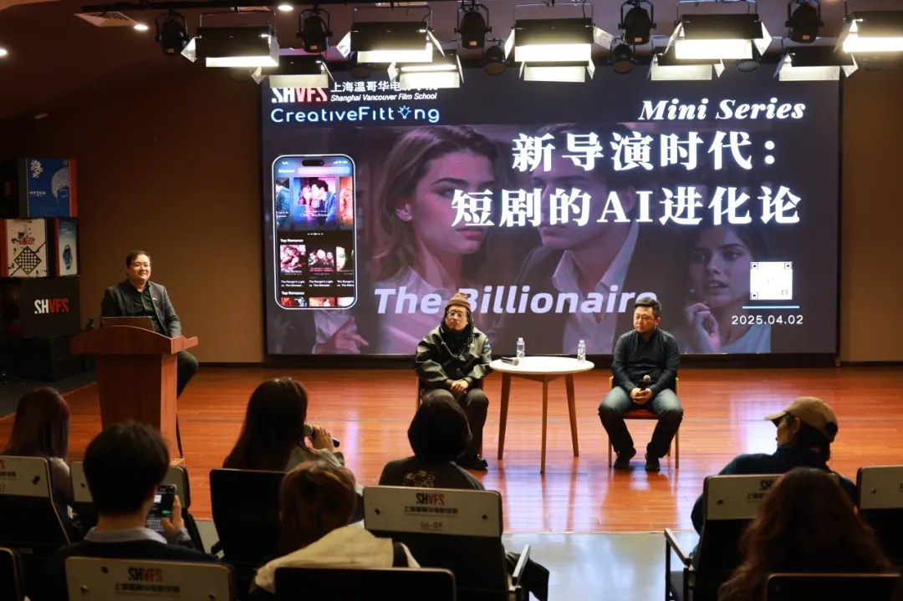
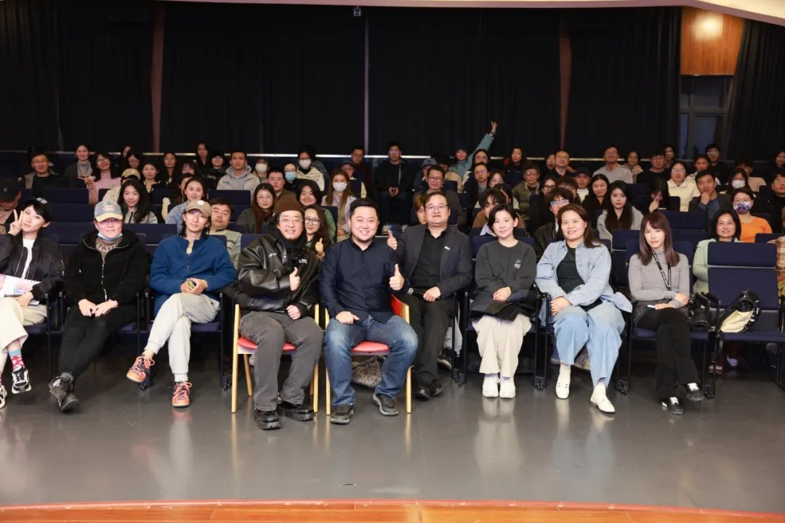

2025 年 4 月 2 日晚，上海温哥华电影学院会客厅迎来了一场聚焦 AI 技术与短剧产业融合的前沿对话。本期温影会客厅以《新导演时代：短剧的 AI 进化论》为主题，特邀全球首部登上短剧票房畅销榜的 AI 短剧《After Divorce: My Five Brothers Paved My Way to the Billionaire Throne》（简称“五个哥哥”）操盘方——井英科技（CreativeFitting）创始人兼 CEO 朱江、导演崔伊，解码 AI 短剧出海的实战经验与未来趋势。活动由上海温哥华电影学院副院长陈晓达主持，吸引了上海大学相关专业师生、影视行业从业者、科技公司代表及 AI 技术爱好者等百余人参与。现场座无虚席，围绕 AI 短剧的创作逻辑、技术突破与全球化路径等议题展开前沿交流，互动氛围热烈。
活动现场，温影执行院长程波与井英科技创始人兼 CEO 朱江共同为“上海温哥华电影学院战略合作伙伴”揭牌，标志着双方正式建立战略合作伙伴关系。上海温哥华电影学院是由上海市政府重点支持，引进加拿大温哥华电影学院的师资和课程建设而成的专业影视院校，由著名导演贾樟柯担任学院院长，在影视教育领域拥有专业的优势。井英科技是国内最早基于 AI 大模型做视频生成的技术团队，在高质量叙事型视频的 AI 生成方面达到领先水准。双方未来将在 AI 影视人才培养、项目孵化等领域展开深度协同。

上海温哥华电影学院执行院长程波致欢迎辞。他表示，学院自 2024 年成立 AI 未来影像创研中心以来，已系统性推进 AI 技术赋能影视教育：通过持续开发 AI 系列课程构建数字教学生态，并积极引入 AI 助教革新教学场景。“真正的影视教育必须与产业同频共振”，程院长强调，学院将持续以开放姿态，通过“温影会客厅”等平台与井英科技等业界公司和创作者建立常态化协同机制，积极融入技术潮流，推动教学、创作与产业实践的深度融合，助力中国新影像生态在全球话语体系中建立技术美学自信。
主题分享环节，井英科技创始人兼 CEO 朱江以《始于短剧，超越短剧》为题，回溯了井英科技的创业历程与技术突破。朱江坦言，两次创业经历让他深刻认识到“技术需服务于内容本质”。他提出，AI 短剧并非传统短剧的“降本工具”，而是一种全新的内容形态——兼具交互性、多模态与全球化基因。朱江在分享中介绍，井英科技自研的 AI 短剧创作平台 CreativeFitting VFS 可以实现一站式创作流程，支持剧本生成、分镜设计、角色建模及场景渲染等功能，并构建了覆盖多个国家和地区的发行网络。
导演崔伊从创作视角切入，揭秘《五个哥哥》的爆款逻辑。这位曾以主创身份参与《航拍中国》《楚国八百年》等传统影视项目的导演，分享了从“监视器后的创作者”到“AI 调教师”的转型心路以及《五个哥哥》的创作细节与技术适配经验。“AI 让我找回了创作的纯粹性。”崔伊表示，传统拍摄中导演需协调灯光、演员、场地等复杂环节，而 AI 工具的高效与可控性，使其能专注故事内核与视觉表达。在创作方法论上，崔伊鼓励同学们大胆启用逆向思维，利用 AI 生成画面的“偶发性”调整剧本，重构剧情节奏。“AI 演员和真人演员表演时一样，也会有‘随机’，这恰恰会出现一些叙事亮点，赋予内容独特生命力”，崔伊在现场笑谈。

互动环节，现场围绕 AI 短剧创作的技术边界、工业化流程及市场前景展开热烈讨论。井英科技创始人兼 CEO 朱江、导演崔伊及井英科技技术团队负责人等行业专家在这场深度交流中进一步阐释了 AI 影视工业化逻辑，并解答了现场从业者关注的热点问题。他们分享了 AI 短剧创作领域的虚拟工作室协作模式、连载式创作、影游融合与互动叙事、全球化布局等生产方案和技术演进方向，展现出在 AI 影视领域的双重自信：以技术突破实现文化表达的精准出海。正如温影副院长陈晓达总结：“AI 短剧不仅是技术革命，更是文化输出的新载体。它让中国故事以更低成本、更高效率走向全球，这正是科技与文化自信的双向奔赴。”
